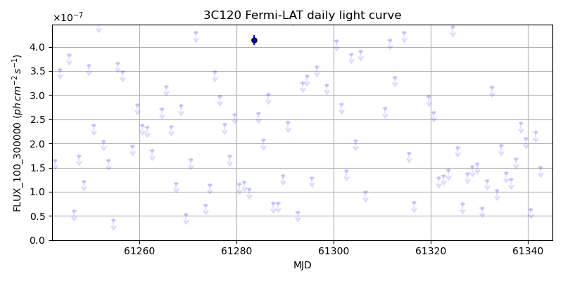
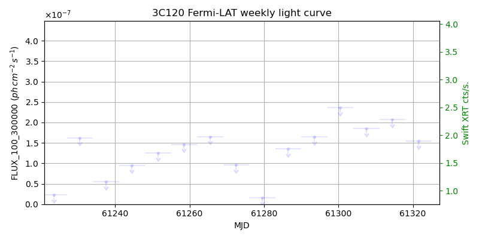
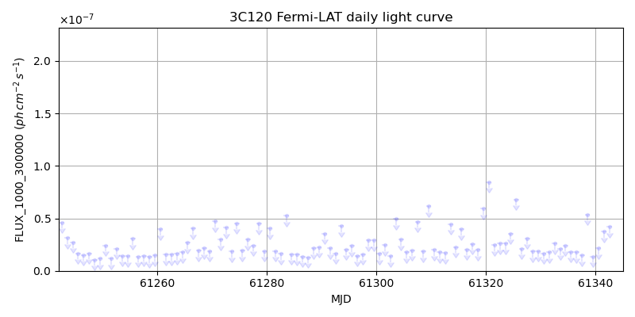
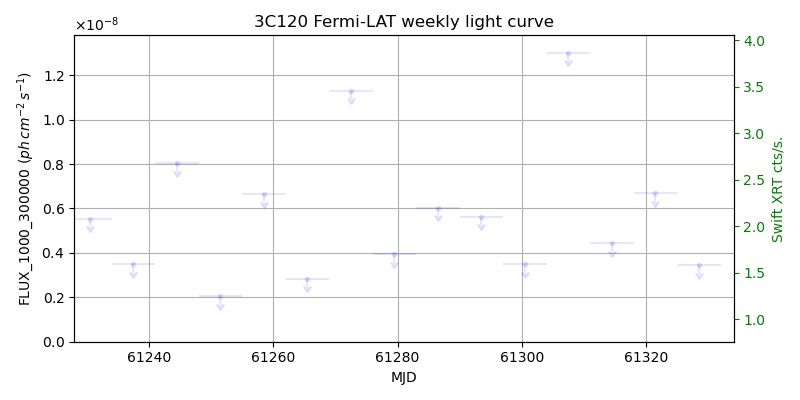

LAT Lightcurve site: https://fermi.gsfc.nasa.gov/ssc/data/access/lat/msl_lc/source/3C_120
Swift site: https://www.swift.psu.edu/monitoring/source.php?source=3C120
NED: Query
Time of last update of this page: UT: 2026-10-17 15:15 (MJD: 61330.635)
| Property | Value |
|---|---|
| R.A. | 4:33:11.04 |
| Dec. | 5:21:14.4 |
| z | 0.033 |
| 3FGL SpectrumType | |
| 3FGL PL Index | -1.00 |
| 3FGL Flux_100_300000 | -1.00e+00 |
| 3FGL Flux_1000_300000 | -1.00e+00 |
| 3FGL Flux >200 GeV | -1.00e+00 |
| 3FGL Extrap. Crab >200 GeV | -1.00 |
| 3FGL Flux After EBL Absorption >200GeV | -1.00e+00 |
| 3FGL EBL Crab Fraction >200GeV | -1.00 |

| MJD | dMJD | Flux | dFlux | Frac3FGL | FracCrab>200GeV | EBLFracCrab>200GeV |
|---|---|---|---|---|---|---|
| 61325.50 | 0.50 | 1.92e-07 | 0.00e+00 | 0.00 | 0.00 | -0.00 |
| 61326.50 | 0.50 | 7.51e-08 | 0.00e+00 | 0.00 | 0.00 | -0.00 |
| 61327.50 | 0.50 | 1.37e-07 | 0.00e+00 | 0.00 | 0.00 | -0.00 |
| 61328.50 | 0.50 | 1.52e-07 | 0.00e+00 | 0.00 | 0.00 | -0.00 |
| 61329.50 | 0.50 | 1.58e-07 | 0.00e+00 | 0.00 | 0.00 | -0.00 |

| MJD | dMJD | Flux | dFlux | Frac3FGL | FracCrab>200GeV | EBLFracCrab>200GeV |
|---|---|---|---|---|---|---|
| 61293.50 | 3.50 | 1.65e-07 | 0.00e+00 | 0.00 | 0.00 | -0.00 |
| 61300.50 | 3.50 | 2.36e-07 | 0.00e+00 | 0.00 | 0.00 | -0.00 |
| 61307.50 | 3.50 | 1.85e-07 | 0.00e+00 | 0.00 | 0.00 | -0.00 |
| 61314.50 | 3.50 | 2.07e-07 | 0.00e+00 | 0.00 | 0.00 | -0.00 |
| 61321.50 | 3.50 | 1.54e-07 | 0.00e+00 | 0.00 | 0.00 | -0.00 |

| MJD | dMJD | Flux | dFlux | Frac3FGL | FracCrab>200GeV | EBLFracCrab>200GeV |
|---|---|---|---|---|---|---|
| 61325.50 | 0.50 | 6.80e-08 | 0.00e+00 | 0.00 | 0.00 | -0.00 |
| 61326.50 | 0.50 | 2.13e-08 | 0.00e+00 | 0.00 | 0.00 | -0.00 |
| 61327.50 | 0.50 | 3.11e-08 | 0.00e+00 | 0.00 | 0.00 | -0.00 |
| 61328.50 | 0.50 | 1.85e-08 | 0.00e+00 | 0.00 | 0.00 | -0.00 |
| 61329.50 | 0.50 | 1.90e-08 | 0.00e+00 | 0.00 | 0.00 | -0.00 |

| MJD | dMJD | Flux | dFlux | Frac3FGL | FracCrab>200GeV | EBLFracCrab>200GeV |
|---|---|---|---|---|---|---|
| 61293.50 | 3.50 | 5.63e-09 | 0.00e+00 | 0.00 | 0.00 | -0.00 |
| 61300.50 | 3.50 | 3.48e-09 | 0.00e+00 | 0.00 | 0.00 | -0.00 |
| 61307.50 | 3.50 | 1.30e-08 | 0.00e+00 | 0.00 | 0.00 | -0.00 |
| 61314.50 | 3.50 | 4.45e-09 | 0.00e+00 | 0.00 | 0.00 | -0.00 |
| 61321.50 | 3.50 | 6.70e-09 | 0.00e+00 | 0.00 | 0.00 | -0.00 |
--------------------------------------------------------- Using user-supplied coords: 4:33:11.04 5:21:14.4 2000 --------------------------------------------------------- FLWO UT night of: 2026-10-18 Local Sid. @ Midnight: 01:23 Sunset (-15.0) (local, UT): 18:56 01:56 Sunrise (-15.0) (local, UT): 05:22 12:22 Moonrise (local, UT): Moonset (local, UT): 22:59 05:59 Moon phase: 0.47 --------------------------------------------------------- AzTime LSID UT Obj_el Obj_az Mn_el Mn_az Sep. --------------------------------------------------------- 18:56 20:18 01:56 -25.1 65.7 30.5 195.3 135.4 19:26 20:48 02:26 -19.1 70.6 28.5 202.5 135.3 19:56 21:18 02:56 -13.0 75.1 25.9 209.3 135.2 20:26 21:48 03:26 -6.7 79.3 22.6 215.6 135.0 20:56 22:19 03:56 0.1 83.4 18.8 221.3 134.9 21:26 22:49 04:26 6.1 87.3 14.5 226.6 134.8 21:56 23:19 04:56 12.4 91.2 9.9 231.4 134.6 22:26 23:49 05:26 18.8 95.3 5.0 235.7 134.5 22:56 00:19 05:56 25.1 99.6 0.2 239.8 134.3 23:26 00:49 06:26 31.3 104.2 -5.5 243.5 134.1 23:56 01:19 06:56 37.5 109.4 -11.3 247.0 133.9 00:26 01:49 07:26 43.4 115.5 -17.0 250.4 133.7 00:56 02:19 07:56 49.0 122.7 -22.8 253.6 133.5 01:26 02:49 08:26 54.1 131.5 -28.7 256.7 133.3 01:56 03:19 08:56 58.5 142.4 -34.7 259.8 133.1 02:26 03:49 09:26 61.7 156.0 -40.7 263.0 132.8 02:56 04:20 09:56 63.5 171.8 -46.8 266.4 132.6 03:26 04:50 10:26 63.5 188.7 -52.8 270.1 132.3 03:56 05:20 10:56 61.7 204.5 -58.9 274.3 132.0 04:26 05:50 11:26 58.3 217.9 -64.9 279.6 131.7 04:56 06:20 11:56 53.9 228.8 -70.8 287.0 131.4 05:22 06:46 12:22 49.5 236.5 -75.7 297.1 131.2 --------------------------------------------------------- Dark hours >55 deg.: 3.29 srcstart (UT): 2026-10-18 08:32 srcend (UT): 2026-10-18 11:49